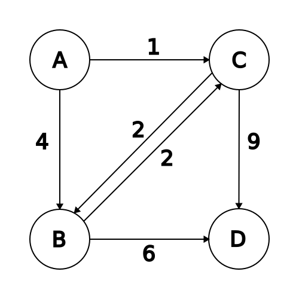

Run A* with and without cycle checking, drawing the frontier table for each.
A heuristic is an idea that helps you make a decision, any heuristic might not actually help you get to your goal, that's why it's a heurisitc and not a method or a prodcedure.
Our goal is to develop a domain specfic heuristic function \( h \left( n \right) \) which guesses the cost of getting to a goal state froma node \( n \), where if we see \( h \left( n _ 1 \right) \lt h \left( n _ 2 \right) \) then we would guess that it is cheap to get to a goal node from \( n _ 1 \) then from \( n _ 2 \). If \( g \) is a goal state then we define \( h \left( g \right) = 0 \)
The heuristic is defined on the state stored in the node, so that if two different nodes have the same state then their heuristic values would be the same.
Use a frontier which has a priority queue, where a nodes priority is it's \( h \) value. Therefore we will always expand nodes by lowest \( h \) value to attempt to greedily find a low cost solution. Since \( h \) values don't necessarily have to depend on the cost of a path, then in general it will not produce cost optimal solutions.
One way of trying to fix the above issue with costs, is to incorporate the cost of a given path as we continue. Let's define the following function:
\[ f \left( n \right) = g \left( n \right) + h \left( n \right) \]Where \( g \left( n \right) \) is the cost of the path to \( n \) and \( h \left( n \right) \) is our usual heuristic, let's denote \( f \) as a evaluation function, and it's individual values \( f \left( n \right) \) as f values, it's purpose is to estimate the cost of getting to the goal from \( n \)
The purpose of the f-value is to combine our knowledge about the cost of a nodes path and what the heuristic value returns.
In A* we will define a f-value function, and expand the node with the lowest f-value on the frontier
We'll note that if there is no solution in the graph, and the graph is an infinite number of different states (even with finite branching factor) which are reachable from the initial state, then this algorithm will never terminate.
This is because on every iteration we will be adding more nodes to the frontier, and we only consume one node off the frontier at a time so we will never be able to clear them all, we note that the algorithm only terminates once the frontier is empty.
But if there ar ea finite number of different reachable states and we do path checking or cycle checking, then it will eventually terminate and deduce that there is no solution. If we don't do cycle checking then it would constantly add a node to the fronteir pop it off and add the next node in the cycle, and continue doing that forever.
| path | frontier | about to be expanded |
| ( A, 0 + 8 ) | (A, 8) | |
| (A, 8) | (AC, 1 + 7), (AB, 4 + 3) | (AB, 7) |
| (AB, 7) | (AC, 8), (ABC, 6 + 7), (ABD, 10 + 0) | (AC, 8) |
| (AC, 8) | (ABC, 6 + 7), (ABD, 10 + 0), (ACB, 3 + 3), (ACD, 10 + 0) | (ACB, 6) |
| (ACB, 6) | (ABC, 6 + 7), (ABD, 10 + 0), (ACD, 10 + 0), (ACBD, 9 + 0), (ACBC, 5 + 7) | (ACBD, 9) |
| (ACBD, 9) | (ABC, 6 + 7), (ABD, 10 + 0), (ACD, 10 + 0), (ACBC, 5 + 7) |
Now if cycle checking is used, recall that if we find a path ending at the same place, but with lower cost, we use that one and prune the other.
| path | frontier | about to be expanded | about to be pruned |
| (A, 0 + 8) | (A, 8) | ||
| (A, 8) | (AC, 1 + 7), (AB, 4 + 3) | (AB, 7) | |
| (AB, 7) | (AC, 1 + 7), (ABC, 6 + 7), (ABD, 10 + 0) | (AC, 8) | (ABC, 6 + 7) |
| (AC, 8) | (ABD, 10 + 0), (ACB, 3 + 3), (ABD, 10 + 0), (ACD, 10 + 0) | (ACB, 6) | (ACD, 10 + 0) |
| (ACB, 6) | (ABD, 10 + 0), (ABD, 10 + 0), (ACBC, 5 + 7), (ACBD, 9 + 0) | (ACB, 6) | (ACBC, 12) |
| (ACBD, 9) | (ABD, 10 + 0), (ABD, 10 + 0), |
Note that (ACBC, 12) was pruned, because we had already seen a path ending in C, which had cost 8, namely (AC, 8), so there was no need to explore this one.
We can prove that A* is complete under certain conditions.
Since we know a goal state \( g \) exists, then at any time in the search we know that an ancestor of \( g \) is on the frontier. Which we can prove by indiction on the number of ancestors of \( g \).
Suppose that \( a \) is an ancestor of \( g \) on the frontier, then by the second condition, we know that every action has finite cost, and thus the path cost of \( a \) is also finite, since we know that \( a \) can be extended to reach a goal node, we know that it has a finite h-value, and thus it's f-value is finite.
As A* continues to run, we claim that the f-value of the nodes on the frontier eventually increase, this is because if we expand some node \( x \), then it is removed from the frontier, and a successor \( y \) is added to the frontier, we know that the g-value of \( y \) is greater than \( x \)'s g value, but perhaps the h-value of \( y \) is smaller than the h-value of \( x \), and in that case it may be possible for the f-value of y to be less than x's f-value, suppose x's f value decreased by \( d \in \mathbb{ R } \).
We know that there exists some \( k \in \mathbb{ Z } \) such that \( k \epsilon \gt d \), and thus no matter what after \( k \) iterations the f-value of any node will exceed the f-value of \( x \) and so f-values eventually increase (which means there are finitely many nodes on the frontier which have smaller f-value). With that said, since \( a \) is on the frontier, and eventually f-values increase, then either A* finds a solution in this time, or \( a \) becomes the node on the frontier with the lowest f-value.
Thus we expand \( a \), and if \( a \) is the immediate ancestor of \( g \), then we get \( g \) and it returns, or it adds another ancestor which is one step closer and by applying the same argument again, we see that eventually expand every ancestor of \( g \) and then \( g \) and so it will find the goal node.
Note that the reason we require a global lower bound on our actions, is that suppose there was a sequence of actions with costs \( \frac{1}{2} , \frac{1}{4} , \frac{1}{8} , \ldots \), and suppose we have some constant heurstic such that \( h \left( n \right) = 1 \) for all nodes, then we note that \( 1 + \frac{1}{2 ^ k} \le 2 \) and so if every other value in the frontier is greater or equal to \( 2 \), then we would continue selecting nodes with these geometric costs, and if there is no goal node then it would do this forever.
We require that the h value is finite, if it can be extended to reach a goal node because if it were infinite, then it's f value would also be infinite, and thus it is greater than all other values, and therefore anything in the frontier will always be expanded before it gets expanded, and the only way it would be expanded is if nothing else is on the frontier, but that's never guarenteed to happen since our graph may be infinite.
Observe the following graph where \( x, y \) are goal states, note that \( h \) is not admissible because the the cost to get from the splitting node to \( x \) is only \( 5 \), but the heuristic overshoots this value.
If A* is executed on this graph, then when the branching node is expanded both \( x \) and \( y \) are added to the frontier, \( x \)'s f-value is given by \( f \left( x \right) := g \left( x \right) + h \left( x \right) = 3 + 2 + 5 + 10 = 20 \) and \( y \)'s f-value is given by \( f \left( y \right) := g \left( y \right) + h \left( y \right) = 3 + 2 + 8 + 6 = 19 \), so therefore A* will expand \( y \) next and terminate because it's a goal state, but \( x \) has lower cost.
This requires that your heustic estimate is less than or equal to the cost of an optimal path to the goal node, that is to say that your heuristic never over-estimates, it can only under-estmiate the cost of getting to the goal node. This implies that the search won't miss any promising path if it is cheap to get to a goal via \( n \) ( that is to say that \( g \left( n \right) \) is low and \( C \left( n \right) \) is low), then \( f \left( n \right) \) is also low, and eventually \( n \) will be expanded off the frontier.
Let \( C ^ * \) be the cost of an optimal solution, and \( \left( s _ 0, s _ 1, \ldots s _ k \right) \) be the path taken. We can show by indiction that for each node in the search space that is reachable from our initial node, at every iteration an ancestor of that node is on the frontier.
Therefore let \( n \) be a node which is reachalbe from the initial state and then let \( n _ 0, n _ 1, \ldots , n _ i, \ldots , n \) be the ancestors of \( n \). So by our previous paragraph at least one of them is always on the frontier. Now observe that
\[ \begin{align} C ^ * &= \operatorname{ cost } \left( \left( s _ 0, s _ 1, \ldots s _ k \right) \right) \\ &= \operatorname{ cost } \left( \left( s _ 0, s _ 1, \ldots , s _ i \right) \right) + \operatorname{ cost } \left( \left( s _ i, \ldots , s _ k \right) \right) \\ &= \operatorname{ cost } \left( \left( s _ 0, s _ 1, \ldots , s _ i \right) \right) + C \left( \right) \end{align} \]if a solution exists then since A* is complete, it will terminate by expanded some goal node \( x \), by the above lemma we know that \( f \left( x \right) \le C ^ * \), and since \( x \) is a goal node we know that \( h \left( x \right) = 0 \) therefore \( \left( f \left( x \right) = g \left( x \right) = \operatorname{ cost } \left( x \right) \right) \) so then \( \operatorname{ cost } \left( x \right) \le C ^ * \), but since no solution can have lower cost than the optimal we conclude that \( \operatorname{ cost } \left( n \right) = C ^ * \) which means that A* returns a cost-optimal solution.
This means that \( h \left( x \right) \) has to be less than the estimate of \( h \left( y \right) \) plus the cost of actually moving from \( x \) to \( y \). So for example if we know that \( h \left( x \right) = 100 \), and the cost of moving from \( x \) to \( y \) is 10, then \( h \left( y \right) \) is at least \( 90 \).
It says that "we don't change our mind", based on a simple transition, so that by taking one action our heuristic isn't going to drastically change.